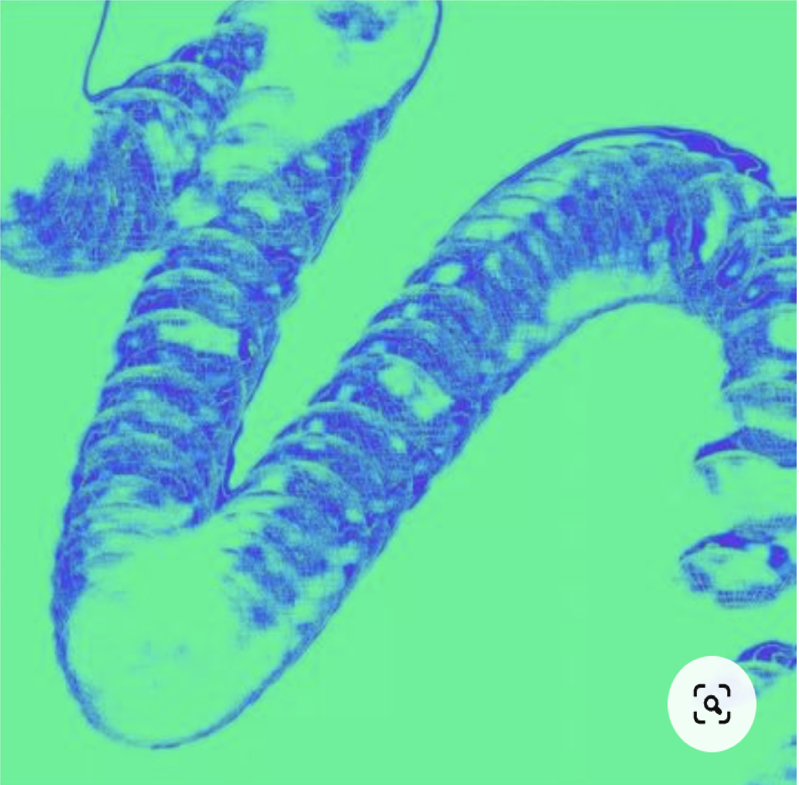

Mutation, Replication and Transmission

The genomes of DNA viruses span a considerable size range from some 1.7 kb (circoviruses) to 2.5 Mbp (pandoraviruses), and may be single or double-stranded DNA molecules that are linear or circular (Fig. 9.1). Whatever their physical nature, viral DNA molecules must be replicated within an infected cell to provide genomes for assembly into progeny virus particles. Such replication invariably requires the synthesis of atleast one, but usually several, viral proteins. Consequently, viral DNA synthesis cannot begin immediately upon arrival of the genome at the appropriate intracellular site, but rather is delayed until viral replication proteins have attained a sufficient concentration. Initiation of viral DNA synthesis typically leads to many cycles of replication and the accumulation of large numbers of newly synthesized DNA molecules. However, longer-lasting latent infections are also common, both in nature and in the laboratory. In these circumstances, the numberof viral DNA molecules made is strictly controlled.
What, after all, is so special about genes? The answer is that they are replicators. The laws of physics are supposed to be true all over the accessible universe. Are there any principles of biology that are likely to have similar universal validity? When astronauts voyage to distant planets and look for life, they can expect to find creatures too strange and unearthly for us to imagine. But is there anything that must be true of all life, wherever it is found, and whatever the basis of its chemistry? If forms of life exist whose chemistry is based on silicon rather than carbon, or ammonia rather than water, if creatures are discovered that boil to death at −100 degrees centigrade, if a form of life is found that is not based on chemistry at all but on electronic reverberating circuits, will there still be any general principle that is true of all life? Obviously I do not know but, if I had to bet, I would put my money on one fundamental principle. This is the law that all life evolves by the differential survival of replicating entities.* The gene, the DNA molecule, happens to be the replicating entity that prevails on our own planet. There may be others. If there are, provided certain other conditions are met, they will almost inevitably tend to become the basis for an evolutionary process. But do we have to go to distant worlds to find other kinds of replicator and other, consequent, kinds of evolution? I think that a new kind of replicator has recently emerged on this very planet. It is staring us in the face. It is still in its infancy, still drifting clumsily about in its primeval soup, but already it is achieving evolutionary change at a rate that leaves the old gene panting far behind.


The new soup is the soup of human culture. We need a name for the new replicator, a noun that conveys the idea of a unit of cultural transmission, or a unit of imitation. ‘Mimeme’ comes from a suitable Greek root, but I want a monosyllable that sounds a bit like ‘gene’. I hope my classicist friends will forgive me if I abbreviate mimeme to meme.* If it is any consolation, it could alternatively be thought of as being related to ‘memory’, or to the French word même. It should be pronounced to rhyme with ‘cream’. Examples of memes are tunes, ideas, catch-phrases, clothes, fashions, ways of making pots or of building arches. Just as genes propagate themselves in the gene pool by leaping from body to body via sperms or eggs, so memes propagate themselves in the meme pool by leaping from brain to brain via a process which, in the broad sense, can be called imitation. If a scientist hears, or reads about, a good idea, he passes it on to his colleagues and students. He mentions it in his articles and his lectures. If the idea catches on, it can be said to propagate itself, spreading from brain to brain. As my colleague N. K. Humphrey neatly summed up an earlier draft of this chapter: ‘… memes should be regarded as living structures, not just metaphorically but technically.* When you plant a fertile meme in my mind you literally parasitize my brain, turning it into a vehicle for the meme’s propagation in just the way that a virus may parasitize the genetic mechanism of a host cell. And this isn’t just a way of talking—the meme for, say, “belief in life after death” is actually realized physically, millions of times over, as a structure in the nervous systems of individual men the world over.’
Consider the idea of God. We do not know how it arose in thememe pool. Probably it originated many times by independent‘mutation’. In any case, it is very old indeed. How does it replicateitself? By the spoken and written word, aided by great music andgreat art. Why does it have such high survival value? Rememberthat ‘survival value’ here does not mean value for a gene in a genepool, but value for a meme in a meme pool. The question reallymeans: What is it about the idea of a god that gives it its stabilityand penetrance in the cultural environment? The survival valueof the god meme in the meme pool results from its great psychologicalappeal. It provides a superficially plausible answer to deepand troubling questions about existence. It suggests that injusticesin this world may be rectified in the next. The ‘everlastingarms’ hold out a cushion against our own inadequacies which,like a doctor’s placebo, is none the less effective for being imaginary.These are some of the reasons why the idea of God is copiedso readily by successive generations of individual brains. Godexists, if only in the form of a meme with high survival value, orinfective power, in the environment provided by human culture.Some of my colleagues have suggested to me that this accountof the survival value of the god meme begs the question. In thelast analysis they wish always to go back to ‘biological advantage’.To them it is not good enough to say that the idea of a godhas ‘great psychological appeal’. They want to know why it hasgreat psychological appeal. Psychological appeal means appealto brains, and brains are shaped by natural selection of genes in gene pools. They want to find some way in which having a brainlike that improves gene survival.
I have a lot of sympathy with this attitude, and I do not doubtthat there are genetic advantages in our having brains of thekind that we have. But nevertheless I think that these colleagues,if they look carefully at the fundamentals of their own assumptions,will find that they are begging just as many questions asI am. Fundamentally, the reason why it is good policy for us totry to explain biological phenomena in terms of gene advantageis that genes are replicators. As soon as the primeval soup providedconditions in which molecules could make copies of themselves,the replicators themselves took over. For more than threethousand million years, DNA has been the only replicator worthtalking about in the world. But it does not necessarily hold thesemonopoly rights for all time. Whenever conditions arise in whicha new kind of replicator can make copies of itself, the new replicatorswill tend to take over, and start a new kind of evolution oftheir own. Once this new evolution begins, it will in no necessarysense be subservient to the old. The old gene-selected evolution,by making brains, provided the soup in which the first memesarose. Once self-copying memes had arisen, their own, muchfaster, kind of evolution took off. We biologists have assimilatedthe idea of genetic evolution so deeply that we tend to forget thatit is only one of many possible kinds of evolution.